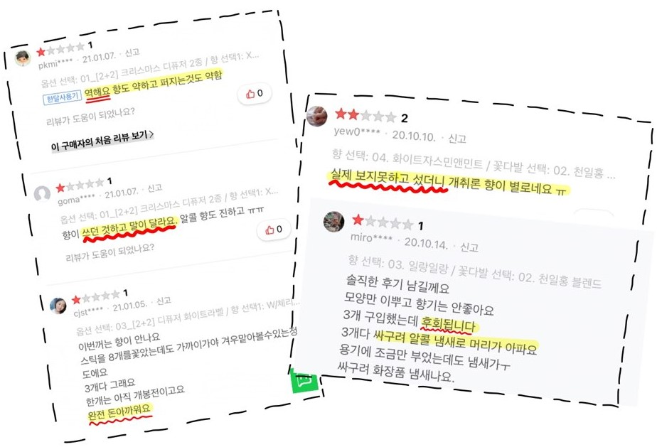
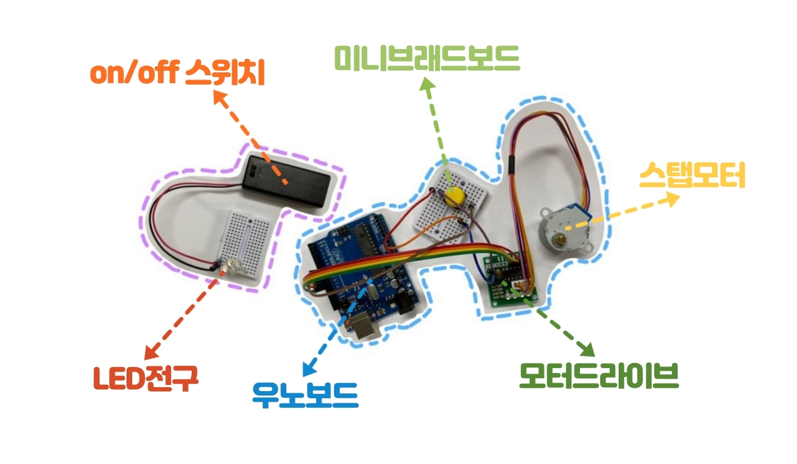

"Design Your Scent"


매일 매일 달라지는 기분
내 기분에 맞추어 향이 바뀌는 디퓨저가 있다면 어떨까요?
바꿀 수 있는 특별한 6가지 향 + 은은한 무드등
여러분의 기분을 분석하여 그날의 향을 추천해 드립니다.
ABOUT

"멍청 비용"
: 물건의 정보를 정확하게 알지 못해 낭비하는 비용
실패하기 쉬운 상품 중 대표적인 것이 "향"입니다.
향기의 종류에 따라서
사람의 기분을 좋게 해주고, 차분하게 해주고,
혹은 집중도도 높여준다고 합니다.
사람의 기분은 매일매일, 아니 시간마다 달라지는데
꼭 한가지 디퓨저 향만 고집해야 할 필요가 있을까요?
디퓨저의 샘플링 + 인테리어 효과 + 재미

코로나19로 인해 집에 머무는 시간이 증가하고 '코로나 블루'가 유행
=> 위의 문제점 해소와 함께 재미를 줄 수 있는 제품이 요구됨
˙
˙
˙
˙
"무드텐더"
2021년 인사이드아웃팀이 새로운 아이디어로 찾아 왔습니다.

1. 여러가지의 향을 맡아 볼 수 있어요.
 1개의 패키지에 6개의 향 샘플이 들어있어요.
1개의 패키지에 6개의 향 샘플이 들어있어요.
한 개 가격에 다양한 향을 체험해 볼 수 있어 경제적이에요.
샘플 패키지만 사면 반영구적인 사용이 가능해요.
다음 디퓨저 향 선택에 도움을 받을 수 있어요.

2. 기분에 따른 향을 추천 받을 수 있어요.
기분을 측정할 수 있는 가장 좋은 도구! 바로 일기입니다.
일기를 작성하면 AI 분석을 통해 향을 추천해줍니다.
여러가지 향 체험과 동시에 재미를 느껴보실 수 있어요.
또한, 일기 쓰는 습관까지 들일 수 있으니
효과는 2배!!

3. 무드등 기능을 통해서 인테리어 효과까지
밤에는
무드등처럼 사용 할 수 있습니다.
잠에 방해되지 않을 빛의 세기로 자는 동안에도 OK!
인테리어 효과까지 누릴 수 있어 가성비가 2배
STRUCTURE

아두이노를 이용한 제품 기능 구현
1. 스탭 모터를 이용하여 디퓨저 교환
: 버튼을 누르면 정해진 속도만큼 돌아가도록 설정하여
사용자가 쉽게 디퓨저를 교환할 수 있도록 했습니다.
2. 팬과 전구의 on/off 제어
: 스위치 on/off 기능을 통해 원하는 시간만 디퓨저를 사용하고
무드등의 기능도 할 수 있도록 구현하였습니다.
HOW TO USE


1. 디퓨저 향기 패키지를 넣는다.
2. 버튼을 눌려 디퓨저 향을 바꾼다.


3. 팬을 돌려 향이 퍼지도록 한다.
4. 전구 on/off를 통해 무드등으로도 사용한다.
MORE


저희 '무드텐더'는 기존 디퓨저, 일기 회사 협업이 가능하여 경쟁력이 있습니다.
- 무드텐더는 일기 어플을 통해 향을 추천 받기 때문에 앱의 사용 유도 가능
- 기존의 디퓨저 업체의 홍보용 제품으로도 판매 가능


더 나아가 최근 주목받고 있는 스마트 워치, 건강 어플과 연동한다면
사용자의 수면 패턴을 분석하여 자동으로
디퓨저를 on/off하는 기능을 추가할 수 있습니다.


& ELECTRONICS ENGINEERING
김혜선
& ELECTRONICS ENGINEERING
곽수빈

이채림
김도하